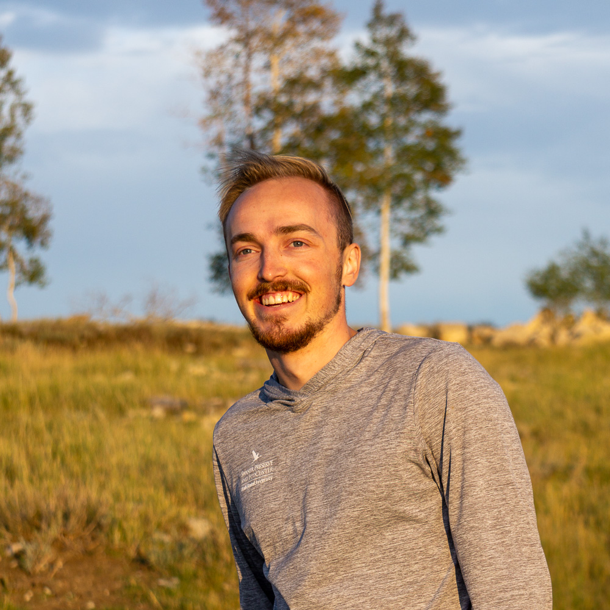

About Me
Colby recently graduated from the University of Utah with a degree in Geography focused on human-environment interaction and a degree in Philosophy of Science focused on environmental science. After graduation, he spent three months traveling in Brazil and Colombia.
During his undergraduate career, he wrote for, and then later became the editor-in-chief of an outdoor themed publication called Wasatch Magazine. The magazine produces six print editions per year that are distributed around Salt Lake and Summit counties. It also publishes content online. While a writer, he gained valuable real-world experience in journalism. During his time as editor, he emphasized high quality photography and well-researched writing that comes together to form an interesting and unique creative product. He learned what it takes to manage a large staff and exercise editorial oversight.